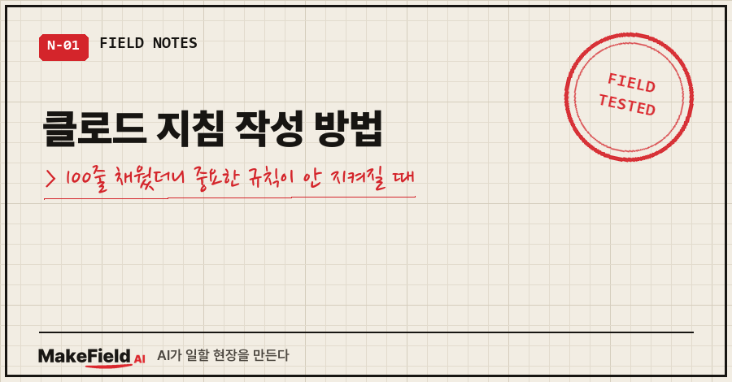
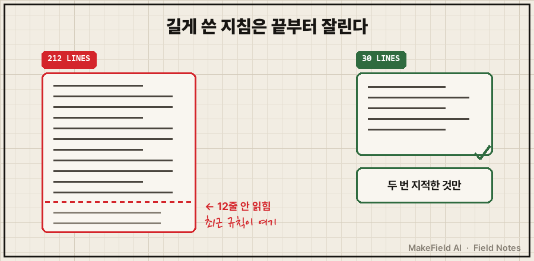
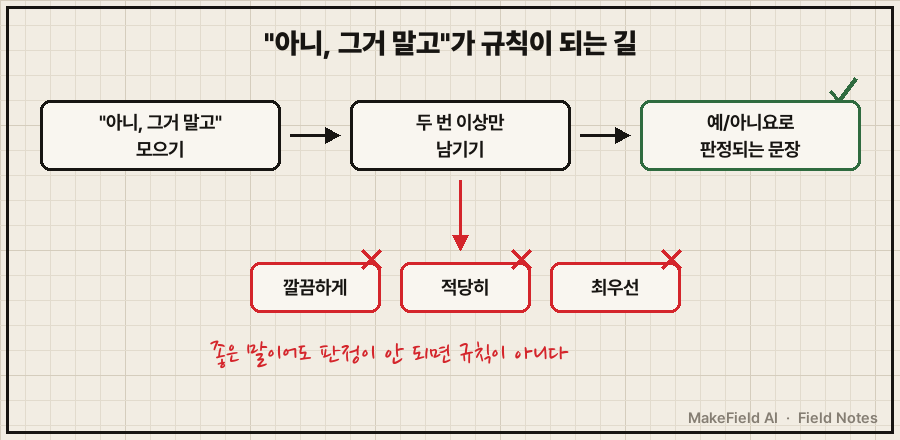
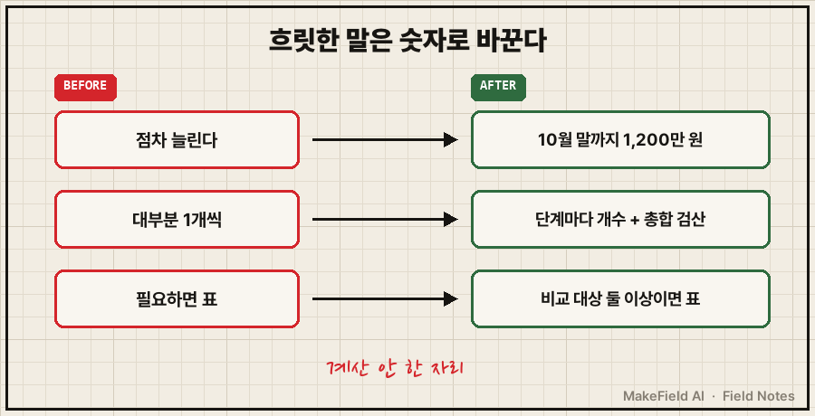

지침 파일을 처음 만들면 욕심이 나요.
내 소개, 말투, 파일 이름, 자주 쓰는 표현, 하지 말아야 할 것…
그렇게 100줄을 채웠는데, 정작 꼭 지켜졌으면 하는 한 줄이 안 지켜집니다.
클로드 지침 작성 방법의 핵심은 많이 적는 게 아니라, AI에게 두 번 이상 "아니, 그거 말고"라고 고친 것만 결과물에서 예/아니요로 확인할 수 있는 문장으로 적는 거예요. 그렇게 추리면 30줄이면 충분합니다. Claude Code 공식 문서도 지침 파일(CLAUDE.md)을 200줄 아래로 두라고 하면서, 길수록 지키는 비율이 떨어진다고 적고 있어요(2026년 9월 기준).
지난 편에서 작업 폴더 맨 위에 지침 파일 10줄을 만들었죠. 이번 편은 그 10줄에 무엇을 더 넣고, 무엇을 끝까지 안 넣을지를 정합니다.
제조 설비 제어로 15년 밥을 먹은 엔지니어예요. 코딩은 AI에게 맡기고, 저는 AI가 매번 읽을 규칙을 적는 쪽입니다.
1. 길게 쓰면 정말 덜 읽힐까? 제 파일이 실제로 잘렸어요
저는 AI가 저절로 읽는 파일을 여러 장 굴리고 있어요. 그중 하나가 기억할 것들의 목록(색인) 파일인데, 한 줄씩 붙이다 보니 계속 길어졌습니다.
2026-10-22에 문제가 터졌어요. 파일이 한도(24.4KB)를 넘으면서 맨 아래 줄들이 잘린 채로 읽히고 있었던 거예요. 새 줄은 늘 맨 아래에 붙으니, 가장 최근에 정한 것부터 안 읽힌 셈이죠. 그날 지난 이력 요약을 별도 파일로 옮기고 "이 파일에 직접 추가 금지"를 적었습니다.
그럼 해결됐냐면.. 오늘(2026-11-26) 아침 Claude Code를 켜자 이런 경고가 떴어요.
WARNING: MEMORY.md is 212 lines (limit: 200).
Only part of it was loaded: 12 of 212 lines were cut off한 달 만에 이번엔 줄 수 한도(200줄)에 걸린 거예요. 길이 한도는 한 번 정리한다고 끝나지 않고, 적는 기준이 없으면 다시 불어납니다. 그래서 이번 편은 "얼마나 적을까"가 아니라 "무엇을 적을까"의 기준을 세우는 편이에요.

2. 오늘 만들 것 — 지침 v1 30줄
책에 실은 사무직 기준 샘플이에요. 지난 편의 10줄에 덮어쓰고, "나와 내 일" 칸부터 내 일로 바꾸면 됩니다.
# 업무 지침 v1 (2026-09-28)
## 나와 내 일
- 중소기업 관리팀 사무직. 보고서·견적서·회의록·월보고를 만든다
- 읽는 사람은 팀장과 대표다. 첫 줄에 결론을 쓴다
## 말투
- 보고서·회의록 문장은 "~함", "~임"으로 끝낸다. "~합니다", "~한다" 금지
- "획기적", "혁신적", "극대화" 같은 꾸밈말을 쓰지 않는다
- 한 문장에는 한 가지 내용만 쓴다
## 형식
- 날짜는 2026-09-28 형식. "9/28", "28일"처럼 줄여 쓰지 않는다
- 금액은 원 단위, 천 단위마다 쉼표. "1.2M", "120만" 같은 축약 금지
- 비교할 것이 둘 이상이면 표로. 표에는 합계 줄을 넣는다
- "점차", "대부분", "적당히" 대신 숫자와 날짜로 적는다
- 항목을 적을 때는 어디에 있는지(파일 이름·시트 이름)를 같이 적는다
## 파일
- 파일 이름: 날짜_문서종류_거래처약칭_v번호 (예: 2026-09-28_견적서_A사_v1)
- 기존 파일을 덮어쓰지 않는다. 고치면 v번호를 올려 새로 저장한다
- 옛 버전은 _old 폴더로 옮긴다. 지우지 않는다
## 확인 못 한 것
- 확인하지 못한 숫자는 [확인필요]로 표시하고, 무엇을 전제로 했는지 적는다
- 되돌릴 수 없는 일(삭제·덮어쓰기·발송)은 하기 전에 먼저 묻는다
## 금지
- 거래처 담당자 이름·전화번호를 결과물에 넣지 않는다
- 없는 규정·법 조항을 근거로 쓰지 않는다이걸 넣고 일부러 흐릿하게 부탁해 봤어요(2026-09-28). "사무용품 구매처를 A사(월 45만원)와 B사(월 52만원, 다음날 배송) 중에 고르는 보고를 써줘. 가격은 점점 오를 것 같아."
| 지침 줄 | AI가 낸 결과 |
|---|---|
| 첫 줄에 결론 | "결론: A사를 추천함. 단, A사 배송 기간 확인 후 확정해야 함." |
| 파일 이름 규칙 | 2026-09-28_보고서_사무용품구매처_v1.md |
| 금액·표·합계 | 450,000원 / 520,000원 표 + 분기 합계 줄 |
| "점차" 대신 숫자, [확인필요] | "점점 오를 것 같아"를 옮기지 않고, 인상 시점·인상률을 모른다고 밝힌 뒤 [확인필요] |
부탁하면서 제가 입으로 말한 규칙은 하나도 없었어요. 30줄이 알아서 일한 거죠.
3. 클로드 지침 작성 방법 — 4단계 따라하기
이 순서는 Claude Code 기준이지만, GPT의 Codex CLI(AGENTS.md)나 Gemini CLI(GEMINI.md)에서도 똑같이 됩니다. 파일 이름만 다르고 무엇을 적을지는 같아요.
1단계. 지난 일주일의 "아니, 그거 말고"를 모읍니다. 새로 짜내지 말고 이미 한 말을 모으는 거예요. 지난 대화 창을 훑으며 직접 적어도 되고, 대화 내용을 복사해 붙여 넣은 뒤 이렇게 시켜도 됩니다. 새 창의 AI는 지난 대화를 모르니 붙여 넣는 게 핵심이에요.
아래 대화에서 내가 고쳐 달라고 한 요청만 뽑아서,
같은 내용끼리 묶고 몇 번 나왔는지 세어줘.
(여기에 지난 대화 붙여 넣기)두 번 이상 나온 것만 후보예요. 공식 문서도 "같은 실수를 두 번째로 할 때" 지침에 넣으라고 해요. 한 번만 나온 건 그날의 요청일 수 있어서 아직 안 적습니다.
2단계. 지적을 '확인할 수 있는 문장'으로 바꿉니다. 기준은 하나예요. 결과물을 보고 지켰는지 예/아니요로 판정할 수 있는가.
| 이렇게 적으면 안 지켜져요 | 이유 | 이렇게 바꿔요 |
|---|---|---|
| 깔끔하게 써라 | 깔끔함은 판정 불가 | 첫 줄에 결론, 문장 끝은 "~함" |
| 필요하면 표를 써라 | "필요"를 AI가 정함 | 비교 대상이 둘 이상이면 표 |
| 고객을 최우선으로 한다 | 결과물에 확인할 곳이 없음 | (적지 않는다) |

3단계. 칸을 나눠 담습니다. 규칙이 열 개를 넘으면 샘플처럼 "나와 내 일 / 말투 / 형식 / 파일 / 확인 못 한 것 / 금지"로 나눠요. 저는 규칙 옆에 확정한 날짜도 붙입니다. 제 파일 이름 규칙 옆엔 "(2026-08-31 확정)"이 적혀 있어요. 나중에 규칙끼리 부딪히면 어느 쪽이 최신인지 바로 보이거든요.
4단계. 길이를 보고 흐릿한 부탁 하나로 시험합니다. 30줄 안팎이면 충분해요. 저장한 뒤엔 위 실험처럼 일부러 애매한 부탁을 던져서, AI가 지침을 근거로 스스로 [확인필요]를 다는지 봅니다.
4. 여기서 이렇게 틀립니다 — "점차", "대부분"이 남아 있다
주말 취미로 AI에게 게임 공략 문서를 시켰다가 세 번 반려한 적이 있어요. 그 이야기는 AI 가이드 만들기, 막상 따라 하려니 안 되는 이유 4가지에 자세히 적었는데, 첫 번째 원인이 "점차 늘린다", "대부분 1개씩" 같은 말이었습니다.
읽을 땐 멀쩡한데, 화면 앞에서 실행하려는 순간 몇 개를 언제 하라는 건지 알 수가 없어요. 사람이 "점차"라고 쓰면 겸손한 표현이지만, AI가 "점차"라고 쓰면 계산을 안 한 자리입니다. 다시 시켜서 단계마다 정확한 숫자를 받고 총합까지 검산했더니 그제야 맞아떨어졌어요.
그래서 지침에 "점차·대부분·적당히 대신 숫자와 날짜로 적는다"를 넣었습니다. "매출을 늘린다"보다 "10월 말까지 1,200만 원"이 화면 앞에서 바로 대조되잖아요.
그런데 이 병은 AI 결과물에만 생기지 않아요. 내 지침 파일 안에도 "필요하면", "적당히"가 숨어 있으면 똑같이 안 지켜집니다. 저장하기 전에 한 번 이렇게 시켜 보세요.
CLAUDE.md에서 "점차·대부분·적당히·필요하면·가능하면"이 들어간 줄을 찾아서,
숫자나 조건으로 바꾼 문장 후보를 옆에 적어줘. 파일은 아직 고치지 마.여러분 지침 파일엔 이런 단어가 몇 개나 숨어 있을까요?

5. 자주 묻는 질문
Q. 지침은 몇 줄이 적당한가요?
처음엔 30줄 안팎이면 충분해요. 공식 문서 기준은 200줄 아래인데, 저는 그 한도를 실제로 넘겨서 끝줄이 잘려 읽히는 걸 두 번 봤습니다. 줄 수보다 "두 번 이상 지적한 것만"이라는 기준을 지키는 게 길이를 막는 방법이에요.
Q. gpt 지침 적는 법도 같나요?
같아요. Codex CLI는 AGENTS.md, Gemini CLI는 GEMINI.md에 적고, 무엇을 적을지는 이 글의 기준 그대로입니다. 판정할 수 있는 문장, 두 번 이상 나온 지적, 흐릿한 단어 금지.
Q. 한 번만 말한 요청은 버리나요?
버리지 말고 메모장에 쌓아 두세요. 같은 말을 두 번째 하는 순간이 지침으로 옮길 신호예요. 저도 AI 결과물을 반려할 때마다 그 사유를 한 줄씩 옮겨 적으며 지침을 키우고 있어요.
규칙이 쌓이면 이번엔 규칙끼리 부딪히기 시작해요. 날짜를 붙여 두라고 한 이유가 거기 있는데, 다음 편에서 그 서열을 정해 볼게요.
이 글은 『직장인의 AI 오답 노트』 2-2장을 블로그용으로 다시 쓴 것입니다. 같은 증상의 원인과 점검표 전체는 책에 있어요. 종이책 예스24 https://www.yes24.com/product/goods/198006547 · 종이책 알라딘 https://www.aladin.co.kr/shop/wproduct.aspx?ItemId=404397482 · 전자책 예스24 https://www.yes24.com/product/goods/197975471